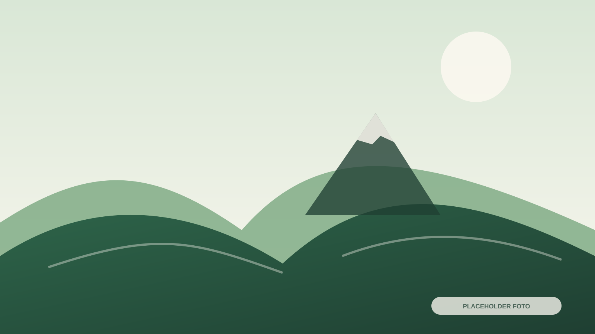
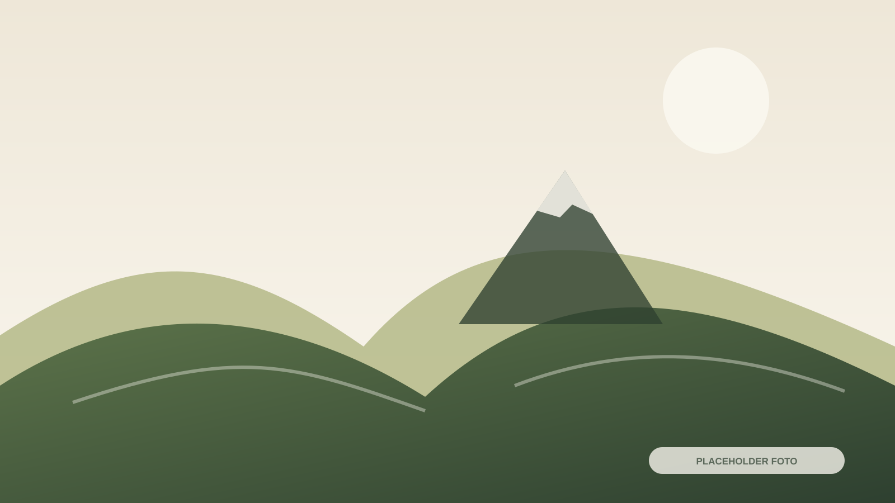
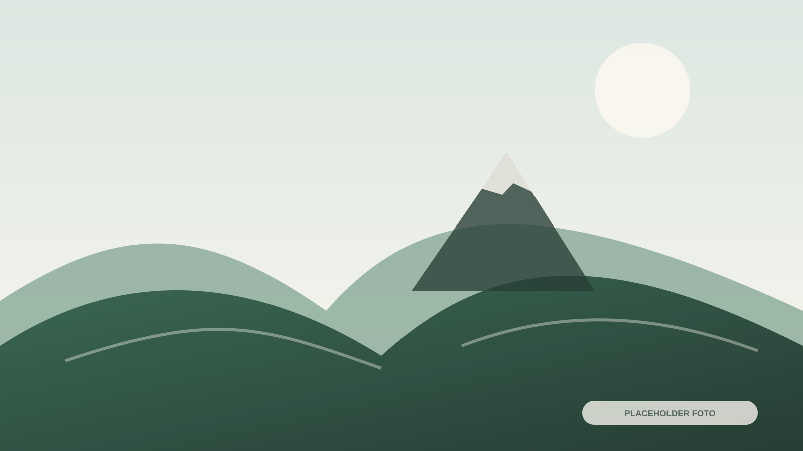

Wisata Alam
Pendakian Gunung Prau
Jalur Patakbanteng, persiapan, SOP, dan layanan pendukung.

Himpunan wisata alam, budaya, edukasi, kunjungan industri, kegiatan masyarakat, serta event dan agenda di Patakbanteng.
Setiap kartu disiapkan untuk memuat durasi, lokasi, target peserta, dan tombol informasi.

Jalur Patakbanteng, persiapan, SOP, dan layanan pendukung.




Halaman ini dapat digunakan untuk mengemas kunjungan berbasis tujuan belajar, pengamatan kegiatan ekonomi desa, agrowisata, atau konservasi.
Nama program, aktivitas, durasi, biaya, kuota, dan jadwal perlu disiapkan oleh pengelola sebelum dipublikasikan.
Jangan mengarang agenda atau kapasitas yang belum dikonfirmasi.
Tambahkan judul, tanggal, lokasi, penyelenggara, deskripsi, dan kontak setelah data tersedia.
Klik gambar untuk membuka tampilan lebih besar. Ganti seluruh placeholder dengan dokumentasi asli.
Hubungi pusat informasi untuk memastikan layanan, jadwal, dan kebutuhan perjalanan Anda.